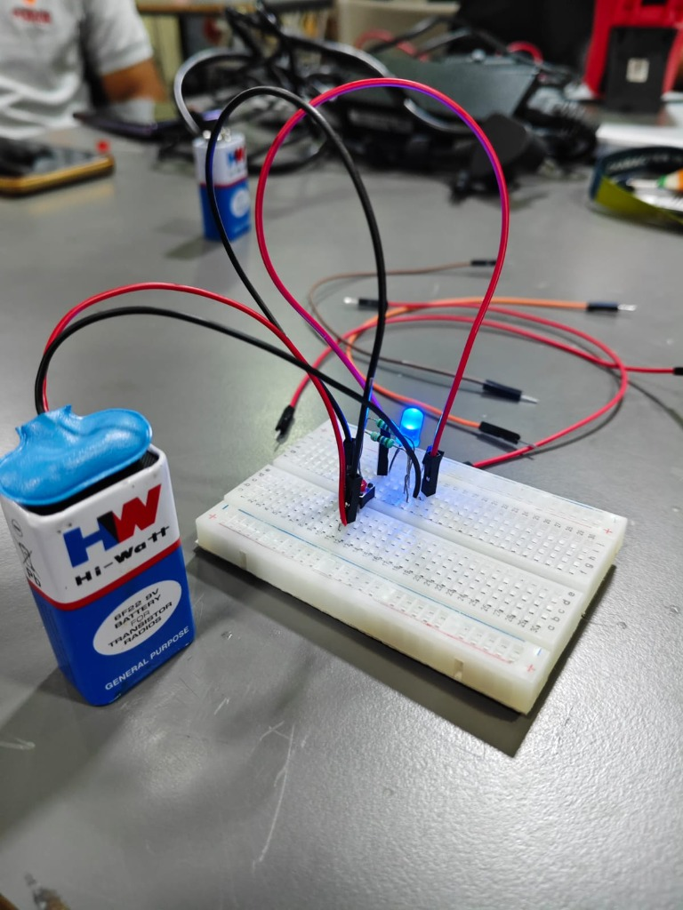
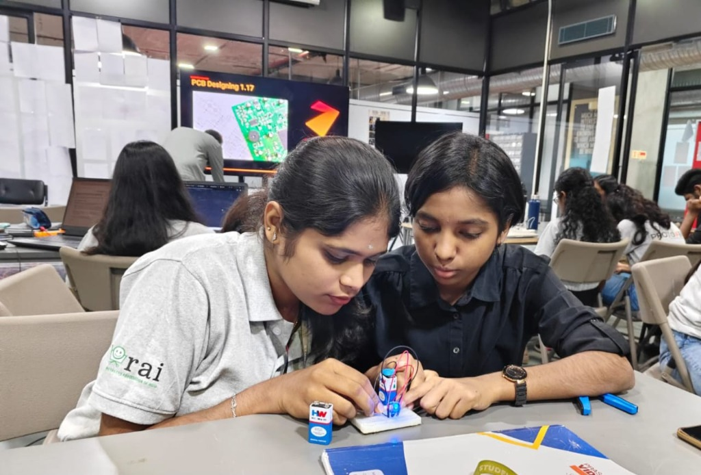

Week 3: Computational Hardware and Electronic Prototyping
Forge Innovation Prototype Lab • Computational Hardware, Thinker Cards, Electronic Models, Sensors & Signals, PCB Assembly and Live Circuit Testing
During Week 3 of my ProtoSem journey at Forge Innovation, I explored computational hardware, electronic components, circuit design, and the relationship between sensors and signals. The sessions focused on understanding how electronic systems work and applying this knowledge through hands-on prototyping and PCB assembly.
Through rigorous laboratory sessions, we connected theoretical concepts of electrical energy and signals directly with tactile circuit design. We examined how basic components interact, assembled physical Printed Circuit Boards (PCBs), integrated functional power rails, and successfully brought hardware circuits to life through systematic testing and troubleshooting.
Understanding Computational Hardware
I learned about fundamental electronic concepts, including power, voltage, diodes, and signal transmission, along with their practical applications. This session helped me understand how electronic components function together and contribute to the operation of hardware systems.
We examined the mathematical and physical relationships governing electrical circuits: Ohm's Law (V = IR), forward bias voltage thresholds for semiconductor diodes, current limiting to protect sensitive loads, and the role of voltage regulation in computing microcontrollers.
Thinker Card Activity
I participated in the Thinker Card activity, which encouraged creative thinking, observation, and problem-solving. It helped me explore ideas from different perspectives and approach challenges with a more structured mindset.
By decoupling conventional thinking patterns, Thinker Cards prompted us to examine hardware and user problems through multiple lenses — questioning fundamental constraints, considering alternative user environments, and synthesizing innovative solutions prior to circuit implementation.
Framing technical roadblocks as multi-dimensional opportunities to discover non-obvious engineering solutions.
Electronic Model Development
I worked on creating an electronic model to understand how different components interact within a circuit. This hands-on activity helped me connect theoretical concepts with practical applications and understand the basic working principles of electronic systems.
Using a solderless breadboard, I wired an active circuit powered by a 9V DC battery. The setup incorporated series resistors to bias a high-intensity blue light-emitting diode (LED), verifying current paths, polarity, and circuit continuity through jumper wire interconnections.

"Electronic model breadboard prototype powered by 9V battery — validating diode bias, current limiting, and active circuit illumination."
PRICE ProtoSem Lab • Breadboard Circuit & LED Signal Verification
From Sensors to Signals
I explored how sensors detect physical changes and convert them into electrical signals that can be processed by electronic systems. This helped me understand the relationship between sensing, signal transmission, and the functioning of electronic devices.
We analyzed the transition from analog physical phenomena (such as light intensity, temperature, or pressure) to varying voltage levels. By conditioning these raw analog voltages through filter circuits and converters, electronic microcontrollers can process, analyze, and make real-time decisions based on environmental stimuli.
PCB Assembly and Circuit Integration
I gained practical experience in building a physical Printed Circuit Board (PCB) model. I assembled the required electronic components on the board, connected them to form the circuit, and examined how the components worked together as part of the system.
In our Forge Innovation workbench session, we correlated physical component positioning with digital PCB layout schematics displayed on screen (PCB Designing 1.17). Working collaboratively, we identified trace pathways, mapped header pins, secured lead connections, and ensured proper grounding across the board.

"Collaborative PCB assembly and hardware prototyping at Forge Innovation — assembling circuit components alongside live PCB layout CAD documentation."
Forge Innovation • PCB Designing 1.17 & Hardware Integration Session
Circuit Testing and Successful Implementation
After assembling the circuit, I tested the physical board to verify its functionality. Through practical testing and observation, we successfully got the circuit working. This experience strengthened my understanding of circuit connections, component integration, testing, and troubleshooting.
We performed continuity checks, measured potential drops across nodes, inspected jumper connections for loose contacts, and validated that electrical signals propagated predictably across all functional blocks without short circuits or overheating.
Week 3 Activity Photo Gallery
Actual photos from our hands-on hardware prototyping and PCB integration sessions at Forge Innovation.
Electronic Model Testing
Breadboard prototype powered by 9V battery with illuminated blue LED verification.
PCB Assembly & Collaboration
Assembling components and validating wiring alongside PCB Designing 1.17 CAD display.
Key Takeaways & Milestones
Computational Hardware Fundamentals
Understood the fundamentals of computational hardware, electronic components, and how they function together in an embedded architecture.
Power, Voltage & Diodes
Explored the practical applications of voltage, power dissipation, diode rectification, and signal transmission in physical circuits.
Thinker Card Problem-Solving
Developed creative thinking and problem-solving skills through the Thinker Card activity, approaching engineering challenges systematically.
Sensors to Signals Conversion
Learned how sensors detect physical changes and convert them into electrical signals that can be processed by electronic devices.
PCB Assembly & Integration
Gained practical experience in building a physical PCB model, component mounting, trace routing, and hardware circuit integration.
Successful Circuit Verification
Successfully tested a physical circuit and verified its working condition, deepening practical testing, troubleshooting, and diagnostic skills.
"Week 3 provided valuable hands-on exposure to electronics and hardware prototyping, helping me connect theoretical knowledge with practical circuit development and testing."
Topics & Keywords Covered
PRICE ProtoSem Archive
Explore previous weeks or return to portfolio